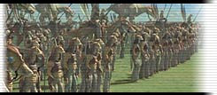
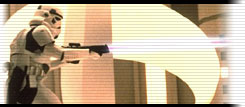
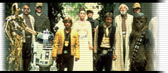
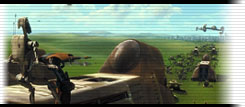

This is a game where Star Wars characters fight.
This is a website about this game.

An outline of the groups you can be.
(Click on the group you want)
Gungans
Galactic Empire
Rebel Alliance
Trade Federation
Royal Naboo
Wookies
Gungans-They are good and have boomers that can destroy enemies.They don't have any technology,though.But they do have mobile shield generators.

Galactic Empire-These are evil guys who have advanced technology which are good for beginners.

Rebel Alliance-These are good guys who run away from the Galactic Empire. You can use there friends called Ewoks,too.

Trade Federation-These are all droids except for Bounty Hunters and Sith. They have low shields but are excellent for beginners.

Royal Naboo-Although you can't use them for campaigns,you can be them in Scenarios (where you can play your own Scenarios). They are like the rebel alliance.

Wookies-They are wild animals with lazer beams.You will train as them in training mode.

You can learn more about Star Wars by clicking here!
Find cheats for this game by clicking here!
Click here for cheats on this game.